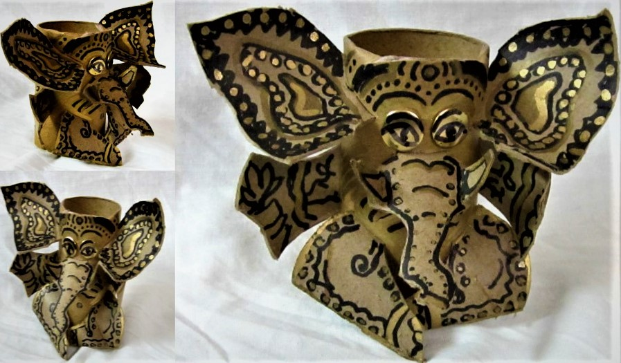
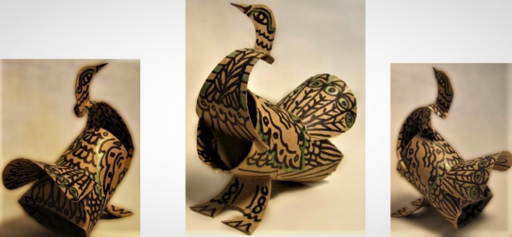

How a Toilet Paper Roll Taught Me More Than Art School
When Life Gives You Cardboard, Make Elephants (and Philosophy). Who knew a humble toilet paper roll could channel the divine? My improvised elephant sculpture

adorned with henna like patterns, became a crash course in jugaad, India’s art of resourceful innovation. Like El Anatsui turning bottle caps into tapestries, I learned: constraints breed creativity. Bonus? Cardboard’s 80% recyclability rate means my art literally loved the planet back.
Why My Trash Bird Would Make Vik Muniz Proud
My peacock’s plumage? Scissor cut from a typically discarded toilet paper roll. In India, peacocks symbolize immortality. So it's fitting for a sculpture that resurrected

trash into art. Derek Gores would approve: his collage portraits prove one person’s junk is another’s jewel. Pro tip: Sustainable art isn’t just eco friendly. It’s rebellion with scissors.
Monkey Gods & the Zen of Play
How Hanuman Inspired a Cardboard Revolution
Channeling Hanuman’s mischievous energy, my monkey sculpture swung into existence with marker drawn tribal patterns. Studies show play boosts problem solving

by 50%...no wonder Subodh Gupta transforms steel tiffins into art. These sculptures weren’t just toys; they were tiny protests against waste, proving innovation thrives where glue guns fear to tread.
Next time you see a toilet paper roll, think: could this be a elephant, a galaxy, or a revolution waiting to happen? (Based on my time abroad... always bet on ‘all three.’)

Richard Diaz
Art is a locked door. The subject is the keyhole, form the key, content the hidden room. Turn slowly; the truth inside reveals itself only to those who linger.